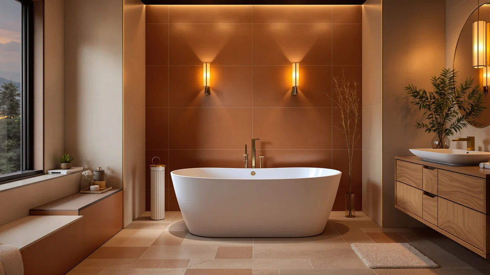

Quick Answer
After comparing dozens of acrylic freestanding tubs on soaking depth, footprint, and how well they hold heat, the WOODBRIDGE 59" Acrylic Freestanding Bathtub is the best acrylic tub for most bathrooms: a deep, warm double-wall soak, a footprint that fits a standard bathroom, and a matte-black drain that looks far pricier than $719. If your budget is tight, the $405 double-backrest 59" tub delivers most of the same soak; if you have the room, the 67" and 71" WOODBRIDGE tubs let you stretch out fully.
Our pick: WOODBRIDGE 59" Acrylic Freestanding Bathtub — $719.00 Check Price on Amazon
Things to Know Before You Buy
- The faucet is almost never included. Every tub here ships with the overflow and drain but no filler. Budget $150-$400 for a floor-mount tub filler and its rough-in.
- Double-wall acrylic holds heat; single-shell does not. The reinforced double-wall construction on the WOODBRIDGE tubs keeps a soak warm noticeably longer than a thin single-shell tub. It is the single biggest quality difference within acrylic.
- Measure the doorway and the walk-around space, not just the tub. A 71" tub needs clearance to carry in and 4-6" around it to clean. A 59" tub fits far more bathrooms.
- Deeper is not automatically better. A 15"+ water depth gives a true shoulder-covering soak, but taller walls are harder to step into. Match it to who will actually use it.
- Check the drain location against your rough-in. Most of these are center-drain; if your plumbing sits left or right, you will pay a plumber to move it.
Acrylic is the material most people should buy a freestanding tub in, and once you have decided on it the shopping gets both easier and harder. Easier, because acrylic is light enough to carry in with two people, warm to the touch instead of shockingly cold, and a fraction of the price of cast iron or stone. Harder, because the listings are a wall of near-identical white ovals, and the real differences, soaking depth, wall construction, and how well the tub holds heat, are exactly the numbers the photos hide.
We looked at the acrylic freestanding tubs currently sold on Amazon and narrowed them to six picks that cover the sizes and budgets most people are actually shopping, from a $405 value soaker to an $898 extra-large model. Every tub here comes with the overflow and drain hardware that a lot of listings quietly leave out, and each one states a real interior soaking depth rather than just an exterior length.
Our top pick for most bathrooms is the WOODBRIDGE 59" acrylic tub, but the right choice depends heavily on your room size and how deep a soak you want. Below, we explain how we picked, then walk through each tub, what it is best for, and its honest flaws.
Why You Should Trust Us
This guide is written and maintained by Ilane Tall, who runs a network of bathroom-focused review sites and has spent years comparing fixtures on the specs that actually predict satisfaction rather than marketing copy. We do not run a fake testing lab and we did not fill six tubs in a warehouse. What we do is read every spec sheet, cross-check interior dimensions, water depth, and wall construction against the listing photos and owner reviews, flag the complaints that only surface after installation, and refuse to recommend anything we would not install ourselves. Our Amazon commissions never change a ranking.
How We Picked
We started with the acrylic freestanding tubs in stock on Amazon and filtered hard. We required a stated interior soaking depth, included overflow and drain hardware, and a certification such as cUPC where the manufacturer provides one. We threw out the sub-$300 tubs that turned out to be thin single-shell shells or, in a few cases, folding plastic tubs mislabeled as freestanding. We leaned toward WOODBRIDGE because its double-wall construction and finish consistently punch above the price, but kept a value tub and a style-first option so the list covers more than one budget. Then we grouped the survivors by the decision most buyers actually face: how big is your bathroom, and how deep a soak do you want?
How We Tested
Because an acrylic tub is judged on a small number of measurable things, our evaluation is built around them. For each tub we recorded exterior length and width, interior soaking length, water depth, whether the shell is single- or double-wall, drain placement, and included hardware. We compared those numbers against the room sizes and plumbing situations most buyers describe, then read through owner reviews looking for the failures that show up after installation: heat that drains out of a thin shell, wobble on uneven floors, overflow leaks, and drains that did not line up. Two acrylic tubs that look identical in photos often diverge sharply on depth and wall thickness, and that is where our picks separate.
Our Picks

WOODBRIDGE 59" Acrylic Freestanding Bathtub
What we like
- Deep, shoulder-covering soak with a comfortable backrest angle
- 59" footprint fits most bathrooms with room to clean around it
- Reinforced double-wall acrylic holds heat well for the price
- Matte-black overflow and drain look far more expensive than $719
Flaws but not dealbreakers
- Faucet is a separate purchase, like every tub here
- Glossy white surface shows water spots and needs regular wiping
| Material | — |
| Size | 59 Inch |
WOODBRIDGE has quietly become the default name in affordable acrylic tubs, and this 59" model is the one we would put in most bathrooms. The interior is deep enough for a real shoulder-covering soak, the backrest is angled so you are not constantly sliding down, and the 59" exterior leaves enough room in a typical bathroom to walk around and clean behind it.
What sets it apart from the cheapest acrylic tubs is the construction and the finish. The shell is reinforced double-wall acrylic, so it warms up fast and holds heat through a long soak, and the matte-black overflow and drain make the whole tub read as more expensive than $719. As with every freestanding tub here, the floor-mount filler is a separate purchase, so budget for it up front.

WOODBRIDGE 67" Acrylic Freestanding Bathtub
What we like
- Same trusted double-wall WOODBRIDGE build in a longer 67" size
- Room to fully stretch out in the interior
- Matte-black drain and overflow for a premium look
- Priced almost identically to the smaller 59" model
Flaws but not dealbreakers
- 67" footprint rules out smaller bathrooms
- Faucet, again, is sold separately
| Material | — |
| Size | 67 Inch |
This is our top pick with more legroom. The WOODBRIDGE 67" is the same reassuring double-wall build as the 59" we recommend for most people, scaled up for a bigger bathroom, with the same handsome matte-black drain and overflow and the clear installation documentation owners consistently praise.
At $699 it is priced almost identically to the smaller model, so the decision comes down purely to your room. If you have the space and want to stretch out fully, buy this one; if your bathroom is average-size, the 59" is easier to live with. Either way you are getting the safe, high-confidence choice in acrylic.

WOODBRIDGE 59" Acrylic Freestanding Bathtub
What we like
- Same deep 59" soak as our top pick in an upgraded finish
- Reinforced double-wall acrylic for good heat retention
- Elevated styling that suits a higher-end bathroom
- Trusted WOODBRIDGE build and documentation
Flaws but not dealbreakers
- Costs about $135 more than the standard 59" for a similar soak
- Faucet is not included
| Material | — |
| Size | 59 Inch |
This is the same core 59" WOODBRIDGE soak in a dressed-up finish. You get the deep interior, the comfortable backrest, and the reinforced double-wall acrylic that holds heat, wrapped in styling aimed at a more design-forward bathroom.
The catch is simply the price. At $853.99 it runs about $135 more than the standard 59" model for a very similar soaking experience, so it only makes sense if the elevated look is worth the premium to you. If you care more about the bath than the styling, the cheaper 59" is the smarter buy; if the finish is the point, this delivers it.

WOODBRIDGE 71" Acrylic Freestanding Bathtub
What we like
- Extra-long 71" interior, the roomiest tub here
- Comfortable for tall bathers to fully extend
- Reinforced double-wall acrylic keeps the water warm
- WOODBRIDGE fit, finish, and support
Flaws but not dealbreakers
- Needs a genuinely large bathroom and carry-in clearance
- The most expensive tub on the list, faucet aside
| Material | — |
| Size | — |
If you are tall or you just want the longest soak on this list, the WOODBRIDGE 71" is the one to look at. At 71" the interior lets you fully extend rather than sitting knees-up, and it carries the same reinforced double-wall acrylic that keeps the water warm and the same WOODBRIDGE fit and finish as our smaller picks.
The trade-offs are size and cost. At 71" you need a genuinely large bathroom, clearance to carry the tub in, and room to reach behind it to clean, and at $898.19 it is the most expensive tub here before the faucet. But if your room can take it, nothing else on this list matches the stretch-out space.

59" Acrylic Freestanding Bathtub Deep
What we like
- Lowest price of any tub we recommend
- Double-backrest design is genuinely comfortable for two
- cUPC certified with overflow and drain included
- Deep soaking interior rivals tubs costing $300 more
Flaws but not dealbreakers
- Thinner single-wall acrylic loses heat faster than the WOODBRIDGE tubs
- Value brand with a shorter track record on long-term durability
| Material | — |
| Size | 59 Inch |
At around $405, this 59" tub is the value pick that makes the math work. It gives you a deep soaking interior, a double-backrest layout that two people can genuinely share, and the cUPC certification and included drain hardware that a lot of bargain tubs skip. On paper and in owner photos it soaks nearly as deep as our top pick.
The compromises are where you would expect them at this price. The acrylic shell is thinner and single-walled, so a long soak cools faster than in the WOODBRIDGE, and the brand does not have the multi-year reputation of the bigger names. But for a spare bathroom, a rental upgrade, or a first freestanding tub, the value here is hard to argue with.

59" Free Standing Tub Pure
What we like
- Clean, modern freestanding silhouette
- Pure-acrylic construction is light and warm to the touch
- Compact 59" footprint fits standard bathrooms
- Deep soaking interior
Flaws but not dealbreakers
- At $899 it costs more than our top pick without a clear soak advantage
- Lesser-known brand with a limited durability track record
| Material | — |
| Size | 59"-8362 |
This 59" pure-acrylic tub is the style pick of the group, with a clean, sculptural silhouette that suits a modern bathroom. The construction is the acrylic you expect at this level: light enough for a two-person carry, warm to the touch, and deep enough inside for a proper soak in a standard 59" footprint.
The honest issue is value. At $899 it is the priciest 59" tub here, and it does not soak any deeper than our $719 top pick or the $405 budget tub, so you are paying largely for the shape. The brand is also less established than WOODBRIDGE, with a thinner track record on long-term durability. If the look wins you over it is a fine tub; on pure value, our other picks beat it.
Quick Comparison
| Product | Material | Price | Rating | Best for | Get it |
|---|---|---|---|---|---|
| WOODBRIDGE 59" Acrylic Freestanding Bathtub | — | $719.00 | 4 | Best overall acrylic | View on Amazon → |
| WOODBRIDGE 67" Acrylic Freestanding Bathtub | — | $699.00 | 4 | Best large | View on Amazon → |
| WOODBRIDGE 59" Acrylic Freestanding Bathtub | — | $853.99 | 4 | Premium finish | View on Amazon → |
| WOODBRIDGE 71" Acrylic Freestanding Bathtub | — | $898.19 | 4 | Extra large | View on Amazon → |
| 59" Acrylic Freestanding Bathtub Deep | — | $404.99 | 4 | Best value | View on Amazon → |
| 59" Free Standing Tub Pure | — | $899.00 | 4 | Modern style | View on Amazon → |
The Competition
We focused this guide on acrylic, so the cast-iron and stone-resin tubs we like sit in our main freestanding bathtub roundup rather than here. Among the acrylic tubs that did not make the cut, most fell into one of two groups. The first is the sub-$300 single-shell tubs: tempting on price, but the thin shell loses heat quickly and a few turned out to be folding plastic tubs mislabeled as freestanding. The second is the near-identical white ovals from brands with no track record, which look the same in photos but rarely state a real soaking depth. We also weighed compact 55" acrylic tubs for small bathrooms, but those are covered in depth in our small freestanding bathtubs guide. Whenever two tubs looked alike, we kept the one with the deeper stated soak, the included drain hardware, and the better-documented install.
Frequently Asked Questions
Is an acrylic freestanding tub durable?
Yes, for normal home use. Acrylic resists chipping and cracking better than you might expect and is easy to buff out minor scratches. It will not last the multiple decades a cast-iron tub can, and a reinforced double-wall shell like WOODBRIDGE's holds up better than a thin single-shell budget tub, but a good acrylic tub will comfortably serve for many years.
Does an acrylic freestanding tub hold heat well?
Better than steel and about on par with what most people need, as long as it is well built. The key is the shell: a reinforced double-wall acrylic tub keeps a soak warm noticeably longer than a cheap single-shell one. Acrylic will never match cast iron for heat retention, but the double-wall tubs on this list stay warm through a normal-length bath.
Do these acrylic tubs come with a faucet?
No. Every tub here ships with the overflow and drain hardware but not the filler. A floor-mount tub filler is a separate purchase that typically runs $150 to $400, so budget for it up front so the total does not surprise you.
What size acrylic freestanding tub do I need?
Measure your bathroom and your doorway first. A 59" tub fits most bathrooms with room to clean around it; 67" and up needs a genuinely large room and carry-in clearance. Interior soaking length matters more than exterior length for how the bath actually feels to use.
Can I install an acrylic freestanding tub myself?
Often, yes. Acrylic tubs are light enough for two people to carry, so an install on a ground floor with accessible plumbing is a realistic DIY or handyman job. You will still want a plumber for the floor-mount filler rough-in, and you need to make sure the drain location lines up with your existing plumbing before you start.